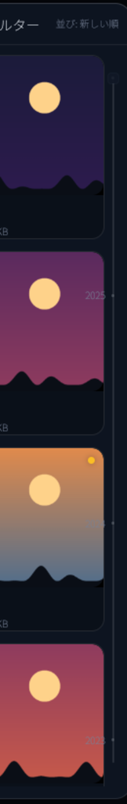

01 / Track
トラックを透明にする
colors.scrollbar を透明にし、通常・ホバー・ドラッグのすべてでトラックを描かない。サムの色・幅・表示モードは変えない。
標準スクロールバーのトラック（背景）をテーマから透明にし、サムだけを表示する。 設定・連携は App が保持する ScrollHandle を維持したまま wrapper 方式へ揃え、 圧縮キューの仮想リストだけを直接配置の例外として残す。 写真グリッドの年レールは、年ナビゲーションとして独立しているため今回変更しない。
colors.scrollbar を透明にし、通常・ホバー・ドラッグのすべてでトラックを描かない。サムの色・幅・表示モードは変えない。
右端の 8 px ガターと Scrollbar::vertical の直接配置をやめ、外側ラッパーへ .vertical_scrollbar(&handle) を付ける。スクロール位置は従来どおり保持する。
VirtualList は wrapper API 非対応のため、VirtualListScrollHandle を共有する直接配置だけを例外として残す。
左が現状、右が変更後。トラックの 16 px 領域は残るが、背景は描かれない。サムの位置・幅・色は同じ。
設定・連携・圧縮・ダイアログの代表例。すべての標準スクロールバーでトラックが消え、サムだけが残る。
日本語 / English
メインカラーとサブカラー
写真フォルダ / ログフォルダ / 取り込み先
圧縮状態 / ワールド名 / 日付 / サイズ
384×216 / キャッシュ使用量
自動起動 / トレイ常駐 / 自動圧縮
非公開インスタンスの写真も送信対象になります。
待機 3 件 / 失敗 1 件
新規写真を自動で圧縮する
待機 12 件 / 処理中 2 件
圧縮キューは VirtualList の仮想スクロールを維持するため、この画面だけ Scrollbar::vertical(&queue_scroll).viewport_from_layout() を直接配置する。見た目は他画面と同じで、トラックは表示しない。
ダイアログ本体と、その中のプロファイル一覧のように入れ子になったスクロール領域でも、それぞれのトラックが消える。
年レールはスクロールバーではなく年ナビゲーション。2 px の線・年ドット・年ラベル・月ピルを現状のまま残す。
写真グリッド右端の年レールは、年ごとの位置を示すドット、年ラベル、現在位置の月ピル、クリック・ドラッグでジャンプする当たり判定を持つ独自のナビゲーション要素です。
Issue との差分: Issue #604 の受け入れ条件は「写真グリッドの独自オーバーレイもトラックを表示しない」を含むが、このモックでは年レールを対象外とする。承認時に Issue のスコープを更新する。

表示モード（スクロール中に表示し、停止後にフェードアウト）は変えない。トラックはどの状態でも描かない。
| 状態 | トラック | サム | 備考 |
|---|---|---|---|
| 通常（非表示） | なし | 描画しない | スクロール停止後、既存のフェードで消える。 |
| スクロール中 | なし | 6 px / muted_2 | 既存の表示モードを維持。 |
| ホバー | なし | 8 px / muted | サムの太さと色だけ変化。 |
| ドラッグ | なし | 8 px / muted | ドラッグ中のスクロール操作は従来どおり。 |
通常のスクロール領域は wrapper、App がハンドルを保持する画面は外側ラッパーへのスクロールバー、仮想リストだけ直接配置。
| 対象 | 現在 | 変更後 | 理由 |
|---|---|---|---|
| 一般的なスクロール領域（ダッシュボード、通知、検索フィルター、ダイアログ本体、写真インスペクタ内など） | overflow_y_scrollbar() | 変更なし | 既に wrapper 方式。 |
| 設定 | overflow_y_scroll() + 8 px ガター + Scrollbar::vertical | 外側ラッパーへ .vertical_scrollbar(&settings_scroll) | App の ScrollHandle を維持し、直接配置をなくす。 |
| 連携・自動 | overflow_y_scroll() + 8 px ガター + Scrollbar::vertical | 外側ラッパーへ .vertical_scrollbar(&integrations_scroll) | 同上。マスター・ディテールの詳細ペインだけに適用。 |
| 圧縮キュー | Scrollbar::vertical(&queue_scroll).viewport_from_layout() | 変更なし（例外） | VirtualList は ScrollableElement 非対応。仮想スクロールとハンドル共有を優先。 |
| 写真グリッドの年レール | 独自描画（2 px 線 + ドット + ラベル + 月ピル） | 変更なし | 年ナビゲーションとして独立。ユーザー決定により対象外。 |
実装上の変更点: crates/ui/src/ui/palette.rs の theme.colors.scrollbar を透明にし、crates/ui/src/ui/settings.rs と crates/ui/src/ui/integrations.rs の直接配置を外側ラッパーの .vertical_scrollbar に置き換える。年レールと圧縮キューのコードは変更しない。
ScrollHandle を維持したまま外側ラッパーの wrapper 方式へ変更する。VirtualList の制約により、直接配置の例外として残す。承認後、設計・計画を確定し、実装 PR でコード・テスト・回帰確認を行う。